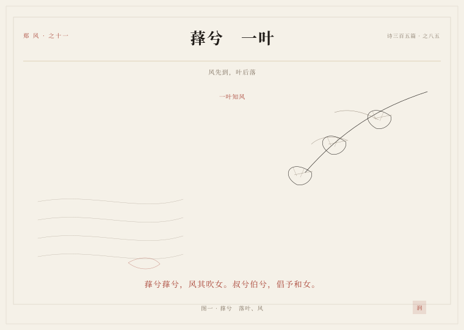
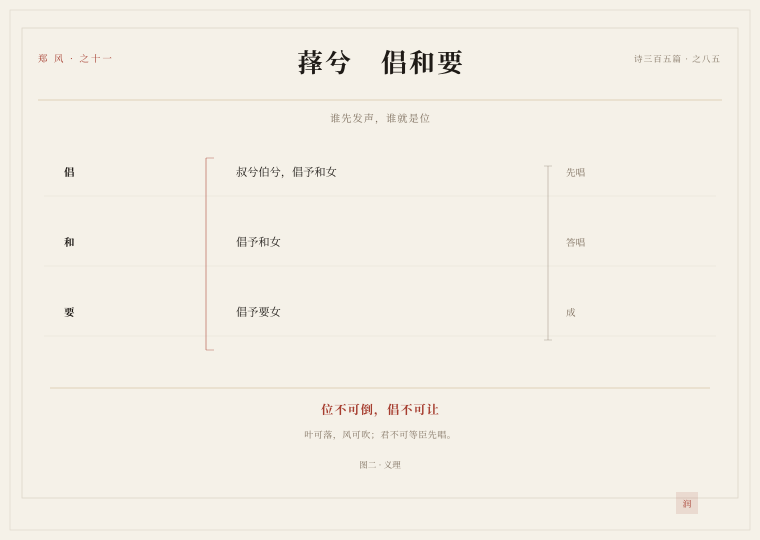

第八十五篇 萚兮
郑风 · 之十一 SJ085
朗读 · 普通话
依经文原文朗读，章次不读出；配古琴底乐，不改速、不加拖腔。全库同一音色（豆包 TTS），非播音员录制。
一 解题
诗三判：
- 谁在说：一个先开口的人。他/她对着“叔兮伯兮”说：叶子要落了，风要吹你了；你们先唱，我来和。全诗只有“倡”与“和”两个动作。
- 说什么事：萚是落叶，风是吹叶的风；叶是被吹的，风是主动的。人却反过来：你们是叔伯，应该先唱；我是应答的人。
两章只换“吹/漂”“和/要”，由答到成。
- 为何编在此：郑风之十一。084 写“所美非美”，085
写“所倡非倡”。一个把美看错，一个把位喊反；都是“名”与“实”不对。
《毛序》：“《萚兮》，刺忽也。君弱臣强，不倡而和也。”
朱子《诗集传》：“赋也。萚，木叶之将落者也。吹、漂，皆风也。女，汝也。倡，倡和之倡也。和，答也。要，成也。○此淫女之词。言萚兮萚兮，则风将吹女矣；叔兮伯兮，则何不倡而予和女乎？”
本库的看法：《萚兮》是一首把“唱和”写成“名分”的诗。
叶落，是风先动；唱和，是倡者先动。诗里“倡”字只出现一次，却是全篇的骨：谁先发声，谁就是君、是兄、是主；谁只答，谁就是臣、是弟、是从。毛序说“君弱臣强，不倡而和”，刺的正是“先发声的人”错了位。
先辨四事：“萚”是落叶，不是“萚”字本义；“吹、漂”都是风，不是水；“女”是汝，不是女人；“要”是成，不是“要求”。
二 经文
第一章
萚兮萚兮，风其吹女。
叔兮伯兮，倡予和女。
第二章
萚兮萚兮，风其漂女。
叔兮伯兮，倡予要女。
分章：二章，章四句。
三 韵读
- 一章：萚、吹、女；萚铎部，吹歌部，女鱼部，顾氏以为通押。
- 二章：萚、漂、女；漂宵部，女鱼部，顾氏以为通押。
读法：两章都以“萚”起，以“女”收；叶落一次，风催一次，人请一次。
韵不必强归一，正如唱和不在一人。
四 字义与名物
- 萚：木叶之将落者；落叶。
- 吹/漂：皆风动叶；吹，吹动；漂，飘动。
- 女：汝，你；指叶，也指听者。
- 叔兮伯兮：叔、伯，兄弟之长者；这里指众公子、贵族。
- 倡：先唱、带头唱。和：答唱。
- 要：成、终；一说“要”为“约”，邀约。
- “倡予和女”：你们先唱，我来和你们。“倡予要女”：你们先唱，我来成你们。
五 今译
叶子要落了，叶子要落了，风要吹你了。叔啊伯啊，你们先唱，我来和你们。
叶子要落了，叶子要落了，风要飘你了。叔啊伯啊，你们先唱，我来成你们。
六 章旨
- 一章：以萚起兴，风先动；人却请叔伯先唱。物的次序对，人的次序反。
- 二章：只换“漂”与“要”；由“和”到“成”，应答更深一层。
- 总收：叶可落，风可吹；位不可倒，倡不可让。
诗不写“君”，只写“谁先唱”；不写“臣”，只写“我和”。
七 诗教
- 兴：以落叶起兴。叶落是秋，风吹是势；势先到，人后知。
- 观：观“倡和”的次序。谁先唱，谁就定调；谁只和，谁就随调。一国之君，不能等臣来定调。
- 群：唱和是群的事。一群人里，先开口的那个人，就是“群”的轴。
- 怨：诗里没有怨，只有请。怨在“不倡”：该你先唱，你为什么不说？
八 分寸与边界
- 不可把“萚”当“落叶”以外的草。它是木叶；一读成草，树就没了。
- 不可把“吹、漂”当水。它们都是风；一读成水，叶就成舟。
- 不可把“女”当女人。它是汝；一读成女子，诗就成情诗。
- 不可把“倡”当“提倡”。它是先唱；一读成提倡，唱和就成口号。
- 不可把“要”当“要求”。它是成、终；一读成要求，末句就硬了。
九 存疑
- 诗旨：毛序“刺忽，君弱臣强，不倡而和”；朱子“淫女之词”。一政治，一私情；本库两存，以“倡和”读。
- “叔伯”：指众公子、贵族；一说指“群臣”。**从“叔伯”，才见“兄弟之长”。
- “要”：毛传“成也”；一说“约”。**从“成”，才与“和”成次第。
- “漂”：风吹叶动；一说“漂”为“飘”。两读同。
- 作者与年代：毛序不言作者；朱子以为“淫女”。是否刺忽，无确证。
十 跨典
- 《论语·述而》：“子与人歌而善，必使反之，而后和之。”——孔子先听人唱，再和；先倡后和，是礼。
- 《礼记·乐记》：“倡和有应，回邪曲直，各归其分。”——唱和各有其分；分一倒，乐就乱。
- 《孟子·公孙丑上》：“如以文王之德，百年而后崩，犹未洽于天下。”——德先倡，天下后和；倡者不德，和者不应。
- 《诗本音》：二章韵读，萚、吹、女与萚、漂、女，顾氏以为通押，见卷三。
十一 双卡与图
双卡六对：
| 萚（木叶将落） |
萚（草叶） |
| 吹／漂（风动叶） |
吹／漂（水动叶） |
| 女（汝） |
女（女人） |
| 倡（先唱） |
倡（提倡） |
| 和（答唱） |
和（和平） |
| 要（成、终） |
要（要求） |

图一 · 萚兮 落叶、风、二叶

图二 · 萚兮 倡、和、要
读图三处：
- 叶在右上：图一右上一枝，叶片将落未落；左下几道风线，从下往上吹。风先到，叶后落。
- 不画树：图一只画一枝一叶，不画整棵树；一叶落，才见秋；一树画满，反而看不见落。
- “倡”在左：图二左“倡”，右“和”，下“要”；先唱在左，答唱在右，成在底。
位置就是名分。